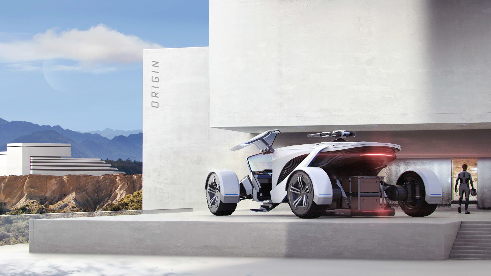

G12 Series
Models
G12
The G12 is a touring-oriented vehicle from Origin Jumpworks. Its style, light armor, 2 SCU storage capacity and a gun turret on top make it a good all-round vehicle.

Features
- Cargo Hold: 2 SCU of cargo, because you never know when a colorful local might need you to transport a crate or two. The cargo can be secured in a section underneath the rear of the vehicle. The cockpit of the rover will have space to store your weapons.
- Remote Turret: 360 degree turret covering every angle, even in hostile territory. The turret contains two guns.
- Performant Wheel System: Custom designed high-performance wheels and suspension, designed by Altimari. Tires are fully swappable between different tread variants to improve handling based on the situation.
- Dual Computer: Two computer slots will allow the G12 to benefit from future computer-blade functionality.
G12a
The Origin G12a combines military might with Origin's unique approach to high-end engineering. Designed for all offensive ground-based operations, it's the ideal partner for long-range perimeter patrols, intercepting assailants, and exploring dangerous new locales.
Features
- Heavy Armor: The G12r’s heavily fortified frame assures you stay protected when things get hairy, even in the most adverse conditions.
- Missile/Countermeasures: Control any battlefield with a comprehensive offensive/defensive package consisting of an eight-count missile rack and countermeasures.
- Enhanced Wheel System: Dominate savage terrain and intense skirmishes with the Altimari XH01 enhanced and hardened wheel system that gives you a killer edge in battle.
G12r
The G12r is the racing variant of the upcoming G12 rover manufactured by Origin. It is equipped with an EMP system but possess no armor.
Features
- Racing Wheel System: The Altimari Supra is a durable yet lightweight wheel system grips the road.
- EMP: Shut down the competition and avoid risky conditions, courtesy of a fully-integrated onboard EMP unit.
- Design: Legendary sport-inspired design, featherweight frame and minimal armor minimize friction and maximize intensity.